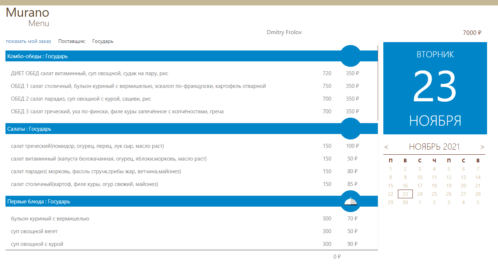
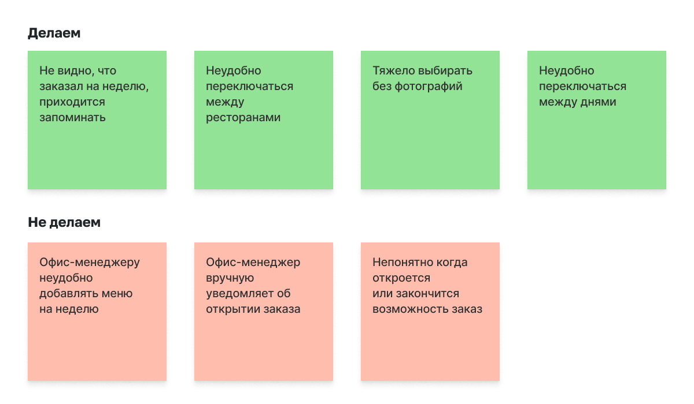
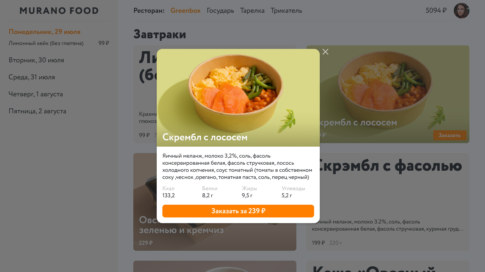
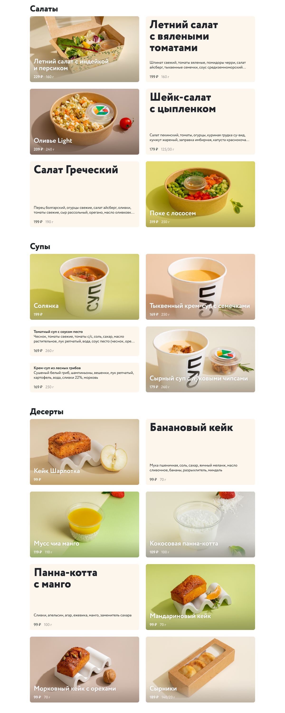

Murano Food
Murano Food это внутренний сервис компании для заказов обедов
в офис. Каждый месяц сотрудникам начисляются деньги,
а по понедельникам они заказывают еду на всю
неделю.
Прошлая версия работала плохо, была неудобной
и не ассоциировалась с едой.

Я провёл интервью с пользователями, выписал
и приоритизировал проблемы.

В новой версии вместо календаря, слева появился заказ
на неделю с возможностью переключаться между днями. Рестораны
теперь на виду и переключение между ними происходит
в один клик.
Полный состав и энергетическую ценность теперь можно посмотреть
в диалоге.

Чтобы проще выбирать еду, был придуман алгоритм, который собирает меню
из карточек. Он смотрит, есть ли фотография, какие
карточки находятся рядом и принимает решение, как должно выглядеть
меню.
